Markanızın Görsel Üretim Hattı
Kurumsal içerik üretimi, tek tek uygulama lisanslarından ibaret değildir. Adobe Gold Reseller Partner olarak lisans yönetimi, marka tutarlılığı ve ekip yetkinliğini birlikte kuruyoruz.

Adobe Creative Cloud for teams; Photoshop, Illustrator, InDesign, Premiere ve Acrobat Pro dahil 20'yi aşkın uygulamayı üretken yapay zekâ özellikleri, iş birliği araçları ve kurumsal yönetim yetenekleriyle birlikte sunar.
Kurumsal ölçekte belirleyici olan uygulamaların kendisi değil, çevresindeki düzendir: koltukların merkezî atanması ve geri alınması, çalışan ayrıldığında varlıkların kaybolmaması, marka kitaplığının tek yerden dağıtılması ve lisans envanterinin denetime hazır tutulması. Cadbim bu düzeni kurar ve yenileme dönemine kadar takip eder.
İçerik hattının teknik ucu da bizim kapsamımızdadır. Mimari ve mühendislik görsellerinin son işlemi, Substance 3D ile malzeme üretimi, Adobe Stock ile lisanslı içerik tedariki ve sanatsal baskı atölyemizle fiziksel çıktı — tasarımdan baskıya kadar tek muhatap.
Lisans ve koltuk yönetimi
Admin Console üzerinden merkezî atama, ekip bazlı raporlama ve yenileme planlaması.
Marka tutarlılığı
Kurumsal renk, tipografi ve şablon kitaplıklarının paylaşımı; her tasarımcının aynı kaynaktan çalışması.
Üretken yapay zekâ
Adobe Firefly ile ticari kullanıma uygun görsel üretimi ve mevcut varlıkların hızla türetilmesi.
Eğitim
Photoshop, Illustrator, InDesign, Premiere Pro ve After Effects eğitimleri; kuruma özel program seçeneğiyle.
Görsel Tasarım
Photoshop ve Illustrator ile marka görselleri ve kimlik üretimi.
Yayın & Doküman
InDesign ile katalog, rapor ve pafta dizgisi.
Video Prodüksiyon
Premiere Pro ve After Effects ile kurgu ve motion.
Üretken AI Entegrasyonu
Firefly ile ticari güvenli AI iş akışları.
Ekip İçin Express
Tasarımcı olmayan ekiplerin marka standardında üretimi.
Kurumsal Lisanslama
VIP/ETLA planları, dağıtım ve yönetim danışmanlığı.
İlgili yazılım ve donanım sayfaları

Creative Cloud
Photoshop, Illustrator ve daha fazlasını içeren Adobe uygulama paketi.

Photoshop
Fotoğraf düzenleme ve dijital görsel tasarımın endüstri standardı yazılımı.

Illustrator
Vektör tabanlı logo, ikon ve illüstrasyon tasarımı için profesyonel araç.
InDesign
Kurumsal doküman, dergi ve baskı tasarımı için sayfa düzenleme yazılımı.

Premiere Pro
Profesyonel video kurgu ve prodüksiyon için Adobe'nin temel yazılımı.

After Effects
Hareketli grafik ve görsel efekt üretimi için Adobe'nin animasyon yazılımı.

Firefly
Metinden görsel üreten Adobe'nin üretken yapay zeka aracı.

Adobe Stock
Milyonlarca telifsiz fotoğraf, video ve şablona erişim sağlayan stok platformu.
Sanatsal Baskı Atölyesi
Dijital tasarımlarınızı fiziksel sanat eserlerine dönüştüren baskı atölyesi hizmeti.
İlgili endüstri sayfalarını inceleyin
Ekipler için Creative Cloud ve Acrobat'ın kurumsal özellikleriyle kurulan dört adım: plandan üretime, onaydan yeniden kullanıma. Yalnızca Cadbim'in yetkili satıcı olduğu ürünlerle.
01 · Planla ve Standardı Kur
Marka renkleri, fontlar ve onaylı varlıklar Creative Cloud Libraries'de tek yerde durur; her iş sıfırdan değil onaylı bir başlangıçtan açılır. Adobe Fonts kapsamındaki 30.000'den fazla font ve paylaşılan Adobe Stock lisansı aynı kütüphaneden kullanılır.
Creative Cloud Libraries · Adobe Fonts · Adobe Stock02 · Üret
20'den fazla uygulamayla tasarım, video ve 3B üretimi; uygulamalara gömülü üretken yapay zekâ ile varyantların elle çoğaltılmaması. Tasarımcı olmayan ekipler Adobe Express şablonlarıyla marka dışına çıkmadan üretir.
Photoshop · Illustrator · InDesign · Premiere · Substance 3D · Firefly · Express03 · Gözden Geçir ve Onayla
Yorum ve onay dosya adı üzerinden değil içeriğin üzerinde yürür. Paylaşılan bağlantıyla inceleme için karşı tarafın oturum açması gerekmez; belge tarafında yasal olarak bağlayıcı elektronik imza toplanır.
Frame.io · Acrobat Pro04 · Sürümü Koru, Yeniden Kullan
180 güne kadar sürüm geçmişiyle eski hâle dönülebilir; kullanıcı başına 1 TB bulut depolama varlıkları aranabilir tutar. Aynı görsel her kanal için yeniden üretilmez, uyarlanır.
Creative Cloud (180 gün sürüm geçmişi · 1 TB) · Admin ConsoleCadbim; Autodesk Gold Partner ve Adobe Gold Reseller Partner, HP, Microsoft, Chaos ve UltiMaker yetkili iş ortağıdır.

Beş adımlı uygulama metodolojimizle sürecin tamamını yönetiyoruz: ihtiyaç analizi, kurgu, devreye alma, yaygınlaştırma ve sürdürme.
Marka & İçerik Denetimi
Görsel diliniz, içerik hacminiz ve ekip yapınız analiz edilir.
Lisans Mimarisi
VIP/ETLA planları ve rol bazlı uygulama dağılımı tasarlanır.
Marka Kiti & Şablonlar
Express marka kiti ve ekip şablonları kurulur.
Ekip Eğitimi
Tasarımcı ve tasarımcı olmayan roller için ayrı eğitim.
Yönetim & Ölçüm
Admin Console'la lisans kullanımı ve içerik üretimi izlenir.
Yüzlerce kurulumdan damıtılmış, işleyen iyi uygulama setimiz.
Kilitli marka kiti
Logo, renk ve font şablonlarda kilitlidir; marka dışı içerik üretilemez.
Şablon sistemi
Tekrarlayan içerikler (duyuru, teklif, sosyal) şablondan dakikada çıkar.
Merkezi varlık kütüphanesi
CC Libraries ile onaylı görseller tek kaynaktan kullanılır.
Lisans uyumu
Stok görsel ve font lisansları kayıt altında; hukuki risk sıfırlanır.
Onay akışı
İçerik yayına amirin onayından geçerek çıkar; geri dönüş azalır.
AI kullanım politikası
Firefly ile üretken AI, ticari güvenli sınırlar içinde kullanılır.
Aradığınız yanıt burada yoksa uzmanımıza doğrudan sorabilirsiniz.
Bireysel aboneliklerden kurumsal plana geçmeli miyiz?
Adobe lisanslarını doğrudan Adobe'den de alabiliriz, farkı ne?
Firefly ile üretilen görseller ticari olarak kullanılabilir mi?
Eğitim ve baskı desteği de veriyor musunuz?
Tedarik sürecin başlangıcıdır; kurulum, lisanslama, kullanıcı eğitimi, teknik destek ve yenileme yönetimi tek muhatap üzerinden yürütülür.
Esnek Abonelik ve Lisans Modelleri
Tek ve çok kullanıcılı abonelikler, 1 ve 3 yıllık dönemler, koleksiyon avantajı — kullanım profilinize uygun planı birlikte belirliyoruz.
Yetkili Eğitim Merkezi (ATC)
Autodesk Yetkili Eğitim Merkezi olarak sertifikalı eğitimler; İzmir merkez ofisimizde sınıf ve çevrim içi programlar.
Türkçe Teknik Destek
Kurulum, lisans yönetimi ve teknik sorularınızda Türkiye'den, Türkçe, aynı gün yanıt.
Kurulum, Lisanslama ve Aktivasyon Desteği
Yazılımların kurulum, lisanslama ve aktivasyon süreçlerinin tamamında teknik destek sağlıyoruz.
Sürücü ve Uyumluluk Çözümleri
İşletim sistemlerinde sürücü kurulumları ve yazılım uyumluluğu konularında teknik çözüm üretiyoruz.
Bu alanda destek alın
Teklif, danışmanlık veya eğitim için iletişime geçin.